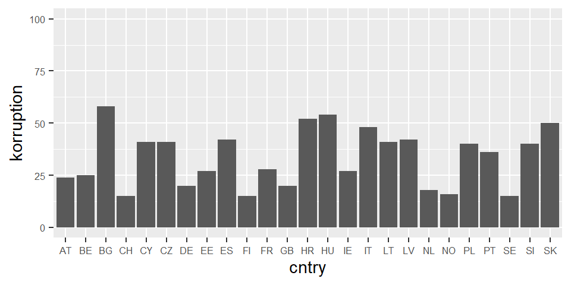

4. Wie schätzt man eine Mehrebenenregression in R?
Themenüberblick
Im vorigen Teil 2 haben wir gesehen, wie man mit Hilfe des sogenannten Nullmodells berechnet, ob eine Mehrebenenregression überhaupt notwendig ist. Und in Teil 3, wie man die Daten für die Mehrebenenregression vorbereitet.
In diesem vierten Teil geht es nun darum: Wie schätzt man eine Mehrebenenregression in R? Und natürlich: wie interpretiert man die Ergebnisse?
Das Video finden Sie hier.
Dazu schätzen wir zwei grundlegende Modelle:1
- Ein Modell mit variierenden Intercepts mit Prädiktoren auf L1
- Ein Modell mit variierenden Intercepts mit Prädiktoren auf L1 und L2
Lernziele für dieses Video sind…
- dass Sie ein einfaches Mehrebenenmodell als Formel ausdrücken können
- dass Sie wissen, wie man das einfache Mehrebenenmodell in R umsetzt
- dass Sie die relevanten Quantities of Interest kennen und interpretieren können.
Das alles schauen wir uns direkt in R an…
Variierende Intercepts mit Prädiktoren auf L1
Bevor wir mit dem ersten Modell loslegen, führen Sie bitte das komplette RScript zu Video 3 aus (RScript_mreg3.R bei den Ressourcen). Mit der source()-Funktion können Sie das direkt aus dem neuen Script heraus aufrufen, ohne die Datei öffnen zu müssen.
source("./Ressourcen/RScript_mreg3.R") #Pfad zur Datei ggf. anpassenWir sehen zwar keinen Output, aber den benötigen wir auch nicht. Wir wollen nur die Objekte im Environment haben, insbesondere, den fertig vorbereiteten ESS Datensatz.
Kommen wir nun zum ersten Modell. Das erste Mehrebenenmodell ist ein Varying Intercept Modell mit Prädiktoren auf Ebene 1:
Die Form ist dieselbe wie beim Nullmodell. Allerdings enthält die Formel nun auch die Ebene 1 Prädiktoren \(x_1\) bis \(x_4\).
\(y_{ij} = \beta_{0j} +\) \(\beta_{1}x_{1ij} + \beta_{2}x_{2ij} + \beta_{3}x_{3ij} + \beta_{4}x_{4ij}\) \(+ r_{ij}\)
mit
\(\beta_{0j} = \gamma_{00} + u_{0j}\)
Statt \(x_1\) bis \(x_4\) könnten wir auch die entsprechenden Variablen aufführen: bildung, responsivitaet, zufr_wirtschaft und soz_vertrauen.
Diese setzen wir auch in der Formel in der lmer()-Funktion ein:
library(lmerTest)
mreg1 <- lmer(pol_vertrauen ~ 1 + bildung +
responsivitaet + zufr_wirtschaft + soz_vertrauen +
(1 | cntry),
data=ess)Mit summary() können wir die Ergebnisse anzeigen lassen:
summary(mreg1)Linear mixed model fit by REML. t-tests use Satterthwaite's method [
lmerModLmerTest]
Formula: pol_vertrauen ~ 1 + bildung + responsivitaet + zufr_wirtschaft +
soz_vertrauen + (1 | cntry)
Data: ess
REML criterion at convergence: 154604
Scaled residuals:
Min 1Q Median 3Q Max
-4.167 -0.657 0.012 0.647 5.390
Random effects:
Groups Name Variance Std.Dev.
cntry (Intercept) 0.147 0.384
Residual 2.784 1.669
Number of obs: 39998, groups: cntry, 25
Fixed effects:
Estimate Std. Error df t value
(Intercept) 3.92905 0.07725 23.96503 50.86
bildung -0.02501 0.00486 39991.56791 -5.15
responsivitaet 0.84569 0.01141 39988.92072 74.09
zufr_wirtschaft 0.31301 0.00439 39651.68675 71.33
soz_vertrauen 0.21042 0.00499 39958.23593 42.15
Pr(>|t|)
(Intercept) < 0.0000000000000002 ***
bildung 0.00000027 ***
responsivitaet < 0.0000000000000002 ***
zufr_wirtschaft < 0.0000000000000002 ***
soz_vertrauen < 0.0000000000000002 ***
---
Signif. codes: 0 '***' 0.001 '**' 0.01 '*' 0.05 '.' 0.1 ' ' 1
Correlation of Fixed Effects:
(Intr) bildng rspnsv zfr_wr
bildung -0.002
responsivtt -0.001 -0.177
zfr_wrtschf 0.003 -0.011 -0.242
soz_vertran 0.003 -0.104 -0.140 -0.231Schauen wir als erstes auf die Fixed Effects.
Wir sehen, dass es neben dem Intercept \(\beta_{0j}\) nun auch weitere Koeffizienten gibt. Das sind die b-Koeffizienten für die unabhängigen Variablen, also \(\beta_1\) bis \(\beta_4\).
Wie bereits beim Nullmodell ist der Intercept der Mittelwert der variierenden Intercepts $beta_{0j} - also das, was in der Regressionsgleichung mit \(\gamma_{00}\) bezeichnet wurde.
Die anderen Regressionsparameter sind nicht variierende Regressionsparameter, und sind wie ganz normale Regressionskoeffizienten zu interpretieren:
Alle Variablen haben einen signifikanten Einfluss, wie wir an der letzten Spalte sehen.
Mit Zunahme von Bildung um einen Skalenpunkt, sinkt das politische Vertrauen um \(-0.025\).
Eine vorläufige Antwort auf unsere Forschungsfrage lautet also: Bildung beeinflusst das politische Vertrauen negativ.
Die anderen Determinanten haben einen positiven Effekt auf politisches Vertrauen. Da die wahrgenommene politische Responsivität eine andere Skalenbreite aufweist, können wir die Effektstärken jedoch nicht direkt miteinander vergleichen.
Schauen wir uns nun die Random Effects an.
Die Random Effects berichten die Varianz der Residuen der beiden Gleichungen:
\(y_{ij} = \beta_{0j} + \beta_{1}x_{1ij} + \beta_{2}x_{2ij} + \beta_{3}x_{3ij} + \beta_{4}x_{4ij} + r_{ij}\)
mit
\(\beta_{0j} = \gamma_{00} + u_{0j}\)
Also: Wie groß ist die unerklärte Varianz auf Individualebene \(r_{ij}\) - das finden wir in der Tabelle hier unter “Residual”. Der Wert ist \(2.784\).
Und wie groß ist die Varianz der variierenden Intercepts \(u_{0j}\). Also: Wie sehr streuen die Ländermittelwerte \(\beta_{0j}\) um den Grand Mean \(\gamma_{00}\)? Das sehen wir bei “cntry (Intercept)”. Dieser Wert ist \(0.147\).
Wir können uns auch anschauen, wie diese Streuung um den Grand Mean ganz konkret aussieht. Dafür gibt es die Funktion ranef() - sie steht für random Effects und berichtet die Werte jedes einzelnen \(\beta_{0j}\) - also den jeweiligen länderspezifischen Intercept:
ranef(mreg1)$cntry
(Intercept)
AT -0.0536
BE 0.3936
BG -0.2900
CH 0.2334
CY -0.0587
CZ -0.3795
DE -0.3467
EE 0.1977
ES -0.3705
FI 0.4898
FR 0.2963
GB -0.1435
HR -0.5364
HU 0.6308
IE -0.0381
IT 0.3565
LT -0.3225
LV -0.3304
NL 0.6036
NO 0.3598
PL -0.4996
PT -0.2344
SE 0.4528
SI -0.5826
SK 0.1719
with conditional variances for "cntry" Da wir zuvor alle unabhängigen Variablen an deren Grand Mean zentriert haben, sind diese länderspezifischen Intercepts als Abweichung vom Grand Mean zu interpretieren.
Für Belgien BE liegt der länderspezifische Intercept \(\beta_{0~Belgien}\) also \(0.394\) Skalenpunkte über dem fixierten Intercept bzw. Grand Mean \(\gamma_{00}\) von \(3.93\).
Für Deutschland DE liegt er \(-0.347\) Skalenpunkte unter diesem Wert.
Analog kann man sich auch die fixierten Effekte ausgeben lassen.
fixef(mreg1) (Intercept) bildung responsivitaet zufr_wirtschaft soz_vertrauen
3.929 -0.025 0.846 0.313 0.210 Was uns nun noch interessiert ist, wie gut unser Modell die abhängige Variable erklärt.
Beim OLS-Regressionsmodell betrachten wir dafür den Determinantionskoeffizienten \(R^2\) als Maß für Varianzaufklärung. Auch beim Mehrebenenmodell können wir prüfen, wie viel Varianz durch das Modell erklärt wird.
Im einfachsten Fall können wir berechnen, wieviel der Varianz die in den Random Effects des Nullmodells steckt, durch ein Modell mit Prädiktoren erklärt wird.
Berechnen wir also noch Mal auf das Nullmodell auf Basis der jetzt 25 Länder:
mreg0 <- lmer(pol_vertrauen ~ 1 + (1 | cntry),
data=ess)
summary(mreg0)Linear mixed model fit by REML. t-tests use Satterthwaite's method [
lmerModLmerTest]
Formula: pol_vertrauen ~ 1 + (1 | cntry)
Data: ess
REML criterion at convergence: 171592
Scaled residuals:
Min 1Q Median 3Q Max
-2.811 -0.741 0.038 0.694 3.916
Random effects:
Groups Name Variance Std.Dev.
cntry (Intercept) 1.11 1.05
Residual 4.26 2.06
Number of obs: 39998, groups: cntry, 25
Fixed effects:
Estimate Std. Error df t value Pr(>|t|)
(Intercept) 3.892 0.211 23.996 18.4 0.0000000000000011 ***
---
Signif. codes: 0 '***' 0.001 '**' 0.01 '*' 0.05 '.' 0.1 ' ' 1as.data.frame(VarCorr(mreg0))[,4][1] 1.11 4.26Auf Ebene 2, der Ebene der Länder haben wir eine Varianz von \(1.112\). Auf Individualebene eine Varianz von \(4.256\).
summary(mreg1)Linear mixed model fit by REML. t-tests use Satterthwaite's method [
lmerModLmerTest]
Formula: pol_vertrauen ~ 1 + bildung + responsivitaet + zufr_wirtschaft +
soz_vertrauen + (1 | cntry)
Data: ess
REML criterion at convergence: 154604
Scaled residuals:
Min 1Q Median 3Q Max
-4.167 -0.657 0.012 0.647 5.390
Random effects:
Groups Name Variance Std.Dev.
cntry (Intercept) 0.147 0.384
Residual 2.784 1.669
Number of obs: 39998, groups: cntry, 25
Fixed effects:
Estimate Std. Error df t value
(Intercept) 3.92905 0.07725 23.96503 50.86
bildung -0.02501 0.00486 39991.56791 -5.15
responsivitaet 0.84569 0.01141 39988.92072 74.09
zufr_wirtschaft 0.31301 0.00439 39651.68675 71.33
soz_vertrauen 0.21042 0.00499 39958.23593 42.15
Pr(>|t|)
(Intercept) < 0.0000000000000002 ***
bildung 0.00000027 ***
responsivitaet < 0.0000000000000002 ***
zufr_wirtschaft < 0.0000000000000002 ***
soz_vertrauen < 0.0000000000000002 ***
---
Signif. codes: 0 '***' 0.001 '**' 0.01 '*' 0.05 '.' 0.1 ' ' 1
Correlation of Fixed Effects:
(Intr) bildng rspnsv zfr_wr
bildung -0.002
responsivtt -0.001 -0.177
zfr_wrtschf 0.003 -0.011 -0.242
soz_vertran 0.003 -0.104 -0.140 -0.231In unserem Modell mreg1 ist die Varianz der Intercepts nur noch bei \(0.147\) und die Residualvarianz auf Individualebene bei \(2.784\)
Also auf Ebene 1 bleiben nur noch \(\frac{2.784}{4.256}=0.654\), also 65.4 Prozent der Varianz übrig.
Oder anders ausgedrückt: Wir erklären 34.6 Prozent der Varianz auf Ebene 1.
Das können wir auch allgemeiner ausdrücken:
\(R^2_{L1}=1-\frac{s^2_{L1_{Modell}}}{s^2_{L1_{Nullmodell}}}\)
Und wir können auch für Ebene 2 berechnen, wieviel der im Nullmodell auf Ebene 2 vorhandenen Varianz durch unser Modell mit Prädiktoren erklärt wurde.
\(R^2_{L2}=1-\frac{s^2_{L2_{Modell}}}{s^2_{L2_{Nullmodell}}}\)
Das sind \(1-\frac{0.147}{1.112}=0.868\)- also 86.8 Prozent der Varianz auf Ebene 2 werden durch unser Modell mreg1 bereits erklärt.
“Moment!” werden Sie jetzt sagen! Wie soll das denn gehen! Wir haben doch nur Prädiktoren der Individualebene im Modell! Wie können individuelle Merkmale von Befragten Varianz zwischen den Ländern erklären?
Richtig! Das ist eine gute Frage. Drücken Sie Pause und nehmen Sie sich ein paar Minuten um zu überlegen, was der Grund sein könnte.
Gut, hier kommt die Auflösung: Es handelt sich um sogenannte Kompositionseffekte.
Nehmen wir Beispielsweise unsere unabhängige Variable Zufriedenheit mit der Wirtschaftslage. Das ist eine Variable der Individualebene und die Befragten in den Ländern können unterschiedliche Werte auf dieser Variable einnehmen. Es ist kein Kontextmerkmal, dass für alle Befragten eines Landes gleich ist.
Aber: Wenn viele oder im Extremfall alle Individuen eines Landes besonders hohe Werte auf dieser Variable einnehmen , dagegen in einem anderen Land viele Individuen eine sehr geringe Zufriedenheit mit der Wirtschaft aufweisen, dann wird - wenn diese Variable auch einen Einfluss auf das politische Vertrauen hat - allein durch die Zusammensetzung der Gruppen das durchschnittliche Niveau der abhängigen Variable in den Ländern beeinflusst.
Also dadurch, dass sich die Länder hinsichtlich der Zusammensetzung der Individuen und ihrer Merkmale unterscheiden, wird bereits Varianz zwischen den Ländern erklärt. Denn mit durchschnittlich höherer Zufriedenheit mit der Wirtschaft geht ja auch durchschnittlich höheres politisches Vertrauen einher.
Somit kann also die Zusammensetzung der Individuen hinsichtlich ihrer Merkmale auf Ebene 1 als Kompositionseffekt Varianz auf Ebene 2, also zwischen den Ländern erklären.
So simpel und klar die Berechnung und Interpretation dieser \(R^2\) Maße für die beiden Ebenen auch ist: Wenn die Modelle komplexer werden und später mehr als nur ein random Effect (also mehr als nur ein variierender Intercept) vorliegt, dann kann man diese ebenenspezifischen \(R^2\) nicht mehr nutzen.
Nakagawa/Schielzeth 2012 haben noch weitere Nachteile angeführt und schlagen eine Alternative Berechnung für ein \(R^2\) für Mehrebenenregressionen vor.
Wir können \(Nakagawa~R^2\) mit Hilfe des performance-Paketes und der Funktion r2() berechnen:
library(performance)
r2(mreg1)# R2 for Mixed Models
Conditional R2: 0.448
Marginal R2: 0.419Das marginale \(R^2\) können wir dabei ignorieren, da es die Varianzen der Random Effects nicht berücksichtigt. Stattdessen betrachten wir das konditionale \(R^2\).
Unser Modell erklärt also etwa 44.8 Prozent der Varianz in den Daten.
Darüber hinaus bietet das performance-Paket die Möglichkeit mit der Funktion model_performance() bei Bedarf weitere Goodness of Fit Maße zu berechnen:
model_performance(mreg0)# Indices of model performance
AIC | AICc | BIC | R2 (cond.) | R2 (marg.) | ICC | RMSE | Sigma
-----------------------------------------------------------------------------------
1.716e+05 | 1.716e+05 | 1.716e+05 | 0.207 | 0.000 | 0.207 | 2.062 | 2.063Kommen wir nun zum nächsten Schritt.
Variierende Intercepts mit Prädiktoren auf L1 und L2
Wir ergänzen das Modell nun um unseren Prädiktor auf Ebene 2.
Als zweite Forschungsfrage wollen wir wissen, ob das Ausmaß an Korruption in einem Land den Effekt von Bildung beeinflussen kann.
Wir nehmen also den Corruption Perception Index (CPI) von Transparency International mit ins Model. Der CPI ist eine Skala von 0 ‘sehr korrupt’ bis 100 ‘sehr sauber’.
Nochmal zur Erinnerung, es ist ein Expertenrating, daher wird der Index Corruption Perception Index genannt. 100 steht nicht für keine objektive Korruption, sondern Transparency International nennt es dann ‘sehr sauber’.
Damit wir die Effekte später intuitiver Interpretieren können, drehen wir die Variable CPI, famit höhere Werte, höhere Korruption bedeuten.
Die original Variable heißt c_ticpi_2018. Diese wird gedreht, dann schauen wir uns die Verteilung mit einer Grafik an.
ess$korruption <- abs(ess$c_ticpi_2018-100)
library(ggplot2)
ggplot(ess, aes(x=cntry, y=korruption)) +
geom_bar(stat = "summary", fun = "mean") +
scale_y_continuous(limits=c(0,100)) +
theme(axis.text=element_text(size=6))
Da die Variable auf Ebene 2 liegt, kann sie nur den länderspezifischen Mittelwert der abhängigen Variable beeinflussen.
Die länderspezifische Korruption muss also Teil der Gleichung des variierenden Intercepts \(\beta_{0j}\) sein. Wir ergänzen dafür die Koeffizienten \(\gamma_{01j}\) in der zweiten Zeile der Gleichung:
\(y_{ij} = \beta_{0j} + \beta_{1}x_{1ij} + \beta_{2}x_{2ij} + \beta_{3}x_{3ij} + \beta_{4}x_{4ij} + r_{ij}\)
mit
\(\beta_{0j} = \gamma_{00} +\) \(\gamma_{01j}\) \(+ u_{0j}\)
\(\gamma_{01j}\) ist also Regressionskoeffizient für den Einfluss der Variable korruption auf den variierenden Intercept.
Durch die Aufnahme dieser unabhängigen Variable auf Ebene 2 sollte zuvor unerklärte Varianz auf Ebene 2 geringer werden - also das Ebene 2 Residuum \(u_{0j}\) geringer werden.
Ob das so ist, sehen wir gleich.
Im R Befehl für die Mehrebenenregression müssen wir nicht explizit angeben, dass es sich um eine Kontextvariable handelt. Wir ergänzen sie einfach in der Formel wie jede andere Variable auch.
library(lmerTest)
mreg2 <- lmer(pol_vertrauen ~ 1 + bildung +
responsivitaet + zufr_wirtschaft + soz_vertrauen +
korruption +
(1 | cntry),
data=ess)
summary(mreg2)Linear mixed model fit by REML. t-tests use Satterthwaite's method [
lmerModLmerTest]
Formula: pol_vertrauen ~ 1 + bildung + responsivitaet + zufr_wirtschaft +
soz_vertrauen + korruption + (1 | cntry)
Data: ess
REML criterion at convergence: 154608
Scaled residuals:
Min 1Q Median 3Q Max
-4.162 -0.657 0.012 0.646 5.391
Random effects:
Groups Name Variance Std.Dev.
cntry (Intercept) 0.127 0.357
Residual 2.784 1.669
Number of obs: 39998, groups: cntry, 25
Fixed effects:
Estimate Std. Error df t value
(Intercept) 4.32173 0.19373 23.15747 22.31
bildung -0.02499 0.00486 39991.73816 -5.14
responsivitaet 0.84524 0.01142 39991.67508 74.04
zufr_wirtschaft 0.31270 0.00439 39865.03534 71.23
soz_vertrauen 0.21016 0.00499 39991.84797 42.08
korruption -0.01176 0.00539 23.23182 -2.18
Pr(>|t|)
(Intercept) < 0.0000000000000002 ***
bildung 0.00000027 ***
responsivitaet < 0.0000000000000002 ***
zufr_wirtschaft < 0.0000000000000002 ***
soz_vertrauen < 0.0000000000000002 ***
korruption 0.039 *
---
Signif. codes: 0 '***' 0.001 '**' 0.01 '*' 0.05 '.' 0.1 ' ' 1
Correlation of Fixed Effects:
(Intr) bildng rspnsv zfr_wr sz_vrt
bildung 0.002
responsivtt -0.021 -0.177
zfr_wrtschf -0.034 -0.011 -0.241
soz_vertran -0.027 -0.104 -0.140 -0.230
korruption -0.929 -0.003 0.022 0.037 0.030Wie wir bei den Fixed Effects sehen können, hat also Korruption einen kleinen, aber signifikanten negativen Effekt auf den variierenden Intercept. Also mit Zunahme der Korruption um einen Skalenpunkt sinkt das durchschnittliche politische Vertrauen in einem Land um \(-0.012\)
Da der Korruptionsindex eine Skala von 0 bis 100 ist, ist das nicht wenig. Sehr korruptionsbelastete Länder haben einen Korruptionsindex von über 50. Am anderen Ende stehen Länder mit einem Wert von 15. Bei 35 Skalenpunkten Unterschied ergibt sich also für die abhängige Variable politisches Vertrauen einen Unterschied von \(-0.412\) Punkten.
Und was sagt die Modellgüte?
model_performance(mreg2)# Indices of model performance
AIC | AICc | BIC | R2 (cond.) | R2 (marg.) | ICC | RMSE | Sigma
-----------------------------------------------------------------------------------
1.546e+05 | 1.546e+05 | 1.547e+05 | 0.471 | 0.446 | 0.044 | 1.668 | 1.669Das konditionale \(R^2\) erhöht sich minimal von 44.8 auf 47.1.
Schluss
Damit sind wir am Ende des vierten Videos.
Wir haben gesehen, wie man ein einfaches Mehrebenenmodell als Formel notiert und das Modell mit der lmer()-Funktion in R umsetzt.
Dabei haben wir zuerst ein variierendes Intercept Modell mit Prädiktoren auf Ebene 1 geschätzt und habe Kompositionseffekte kennengelernt. Danach haben wir das Modell um eine unabhängige Variable auf Ebene 2 ergänzt und interpretiert.
Im nächsten Video 5 werden wir dann das Varying Slope Modell und das Modell mit Cross-Level Interaktion anschauen und klären, wie man herausfindet, welches Modell das passende ist.
Am Ende dieses Videos gibt es noch eine Aufgabe und zum Schluss die Literatur.
Aufgabe
- Rechnen Sie zu einer eigenen Fragestellung ein Mehrebenenmodell mit Prädiktoren auf Ebene 1. Prüfen Sie, wie stark Kompositionseffekte die Varianz auf Ebene 2 im Vergleich zum Nullmodell verringern.
- Ergänzen Sie das Mehrebenenmodell um Prädiktoren auf Ebene 2. Wie viel Varianz können Sie auf den beiden Ebenen jeweils für sich genommen erklären?
Lernzielabgleich
Haben Sie alles mitgenommen? Fragen Sie sich selbst, ob Sie die folgenden Lernziele erreicht haben:
- Sie können ein einfaches Mehrebenenmodell als Formel ausdrücken.
- Sie wissen, wie man das einfache Mehrebenenmodell in R umsetzt.
- Sie kennen die relevanten Quantities of Interest und können sie interpretieren.
Literatur
- Nakagawa, S.; Schielzeth, H. (2013): A general and simple method for obtaining R2 from generalized linear mixed-effects models. Methods in Ecology and Evolution, 4(2), 133–142. DOI: https://doi.org/10.1111/j.2041-210x.2012.00261.x